KuyDrive
UX Design Case Study - Aplikasi Khusus Ojek Motor
Overview
KuyDrive adalah aplikasi ojek online khusus motor yang menyediakan kecepatan pemesanan untuk menghindari kemacetan, aplikasi yang menjawab keluhan pengguna tentang aplikasi yang terlalu berat dan bertele-tele.
1 Empathize - Memahami Pengguna
Tahap pertama adalah memahami kendala pengguna aplikasi ojek online saat ini melalui wawancara mendalam.
👥 3 Target Pengguna Utama
-
1. Dava (20th) - Mahasiswa
Ingin transportasi hemat & aplikasi responsif. Sering terkendala hujan. -
2. Gufron (27th) - Karyawan
Butuh kecepatan hindari macet. Masalah utama: titik jemput tidak akurat. -
3. Aulia (30th) - ASN
Butuh rasa aman & fitur chat yang tidak cepat hilang untuk komplain.
⚠️ Pain Points
- Susah dapat driver saat hujan & tidak ada notifikasi cuaca.
- Aplikasi Super-App terlalu berat/lemot di HP mid-range.
- Riwayat chat langsung hilang setelah order selesai.
📋 Hasil Riset
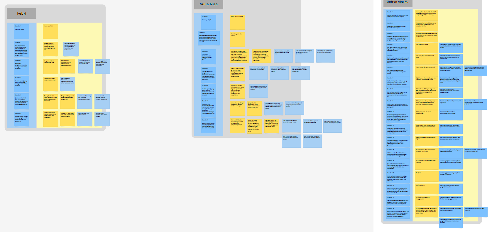
👤 3 User Persona & Journey Map
Kami memetakan perjalanan 3 tipe pengguna yang berbeda untuk memastikan semua kebutuhan terpenuhi.
Persona 1: Dava
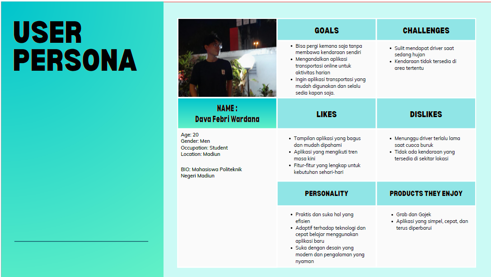Persona 2: Gufron
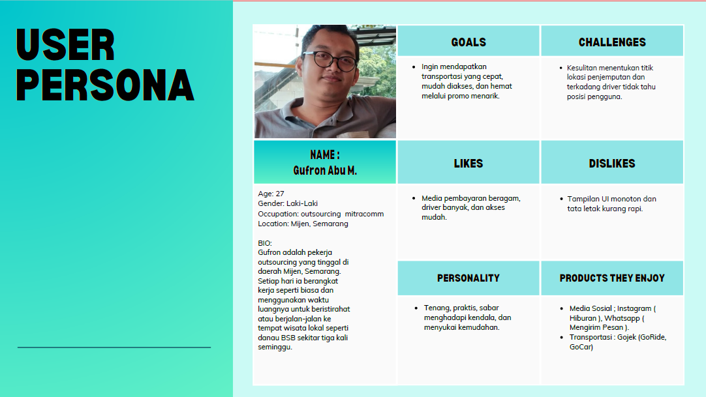Persona 3: Aulia
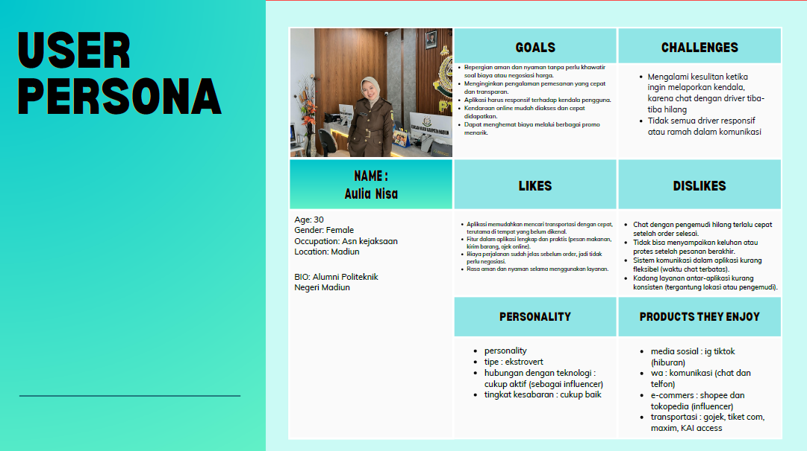Journey Map Dava
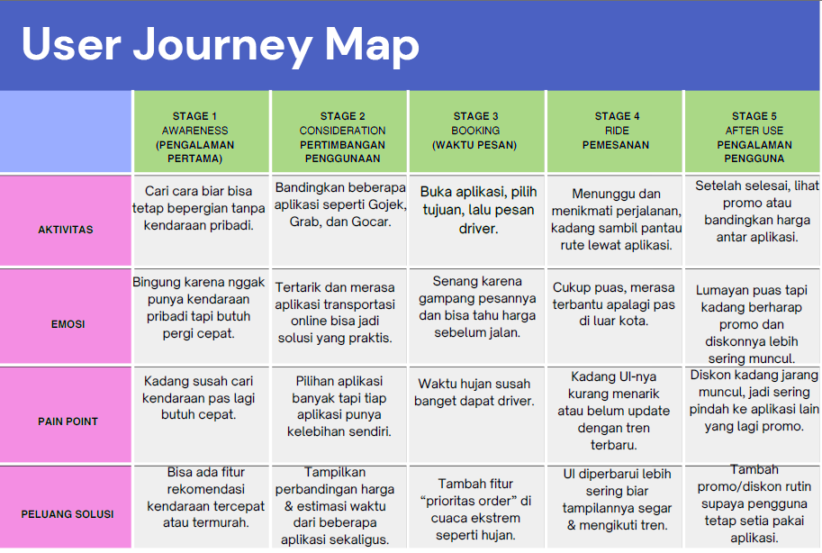Journey Map Gufron
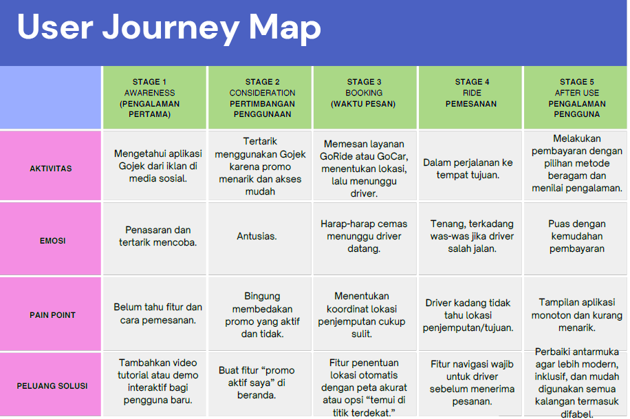Journey Map Aulia
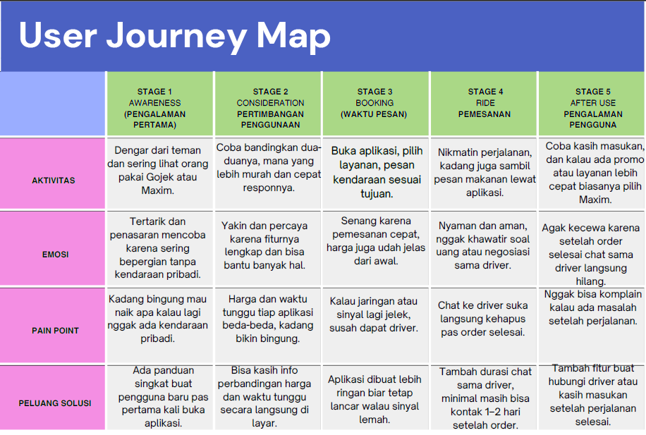📊 Competitor Analysis
| Fitur | GOJEK | GRAB | MAXIM | KUYRIDE |
|---|---|---|---|---|
| Jenis Layanan | Super App (Lengkap) | Super App (Regional) | Transport & Delivery | Specialist (Motor Only) |
| User Interface | Kompleks / Berat | Clean / Modern | Sangat Sederhana | Minimalis Dark Mode |
| Harga | Menengah - Tinggi | Menengah - Tinggi | Murah | Terjangkau (Kompetitif) |
| Fitur Unik | Ekosistem GoPay | Loyalty Point | Booking Cepat | Weather Alert & Chat History |
2 Define - Masalah Utama
🎯 Problem Statement
Pengguna merasa aplikasi transportasi yang ada saat ini terlalu kompleks dan berat. Mereka sering kesulitan mendapatkan driver motor dengan cepat, dan sulit menjangkau driver setelah proses pemesanan selesai.
🎯 Solusi Utama
Membuat aplikasi "Single Service" (Hanya Motor) yang lebih cepat, ringan, dan efektif dengan fitur khusus yaitu chatbot yang memudahkan user untuk berkomunikasi dengan driver setelah order selesai.
3 Ideate - Mengembangkan Ide
🎨 Sketch & User Flow
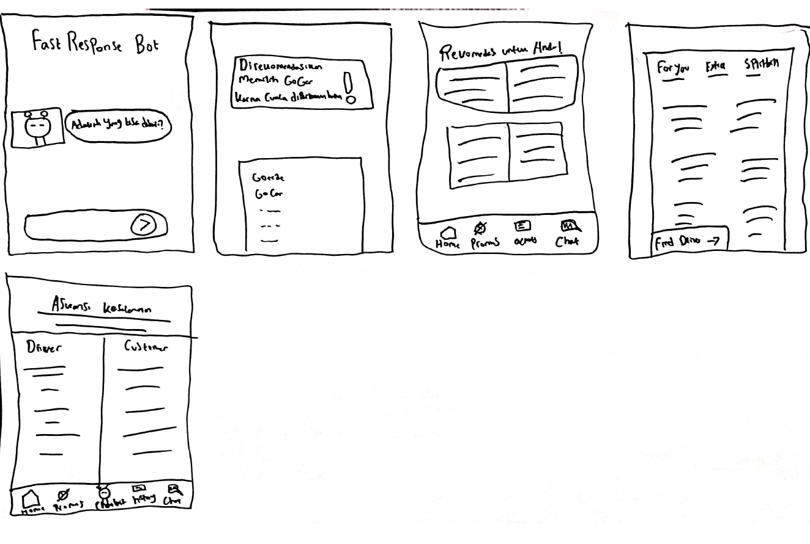
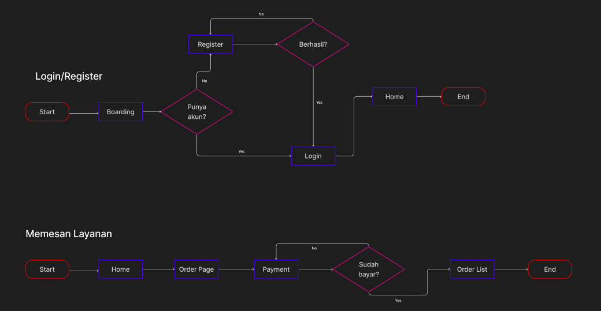
🎨 UI Kit (Black & Yellow)
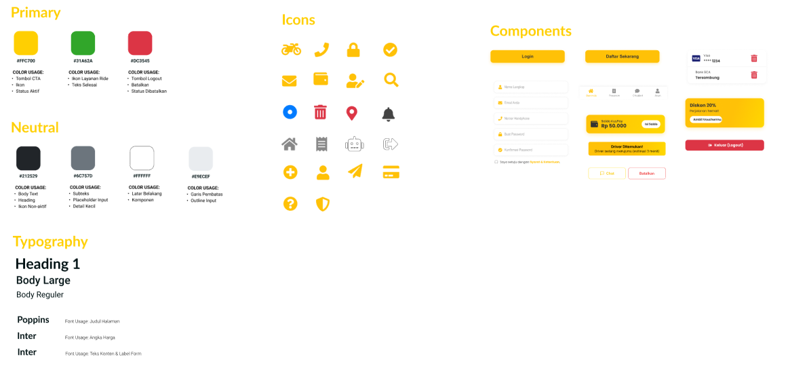
4 Prototype - Design Showcase

5 Test - Usability Testing
Temuan Positif ✅
- Tema putih sangat nyaman di saat siang hari.
- Flow pemesanan motor sangat cepat.
Area Perbaikan ⚠️
- Tombol pesan KuyRide warnanya kontras dengan tema aplikasi.
✨ Before & After Iteration
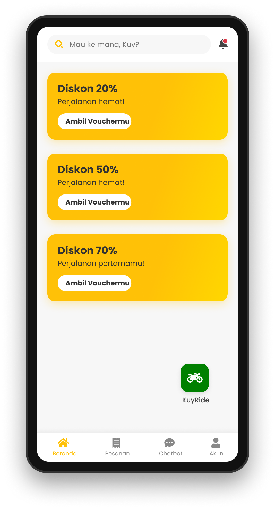

🎉 Conclusion
KuyRide membuktikan bahwa aplikasi yang fokus pada satu layanan (motor) dengan UI yang sederhana (Putih-Kuning) jauh lebih efektif untuk pengguna yang membutuhkan kecepatan.